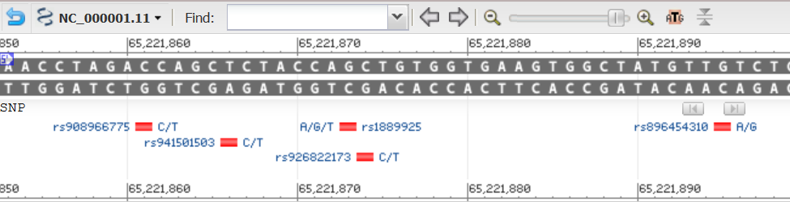
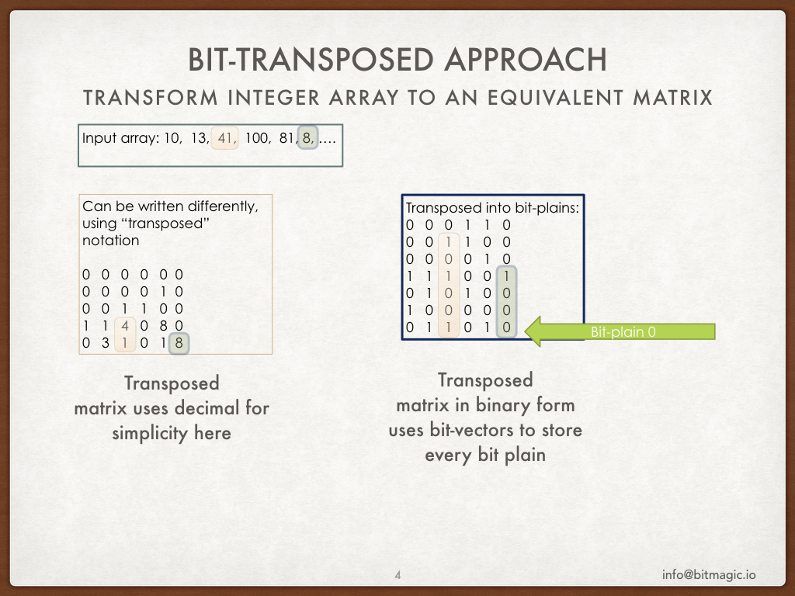
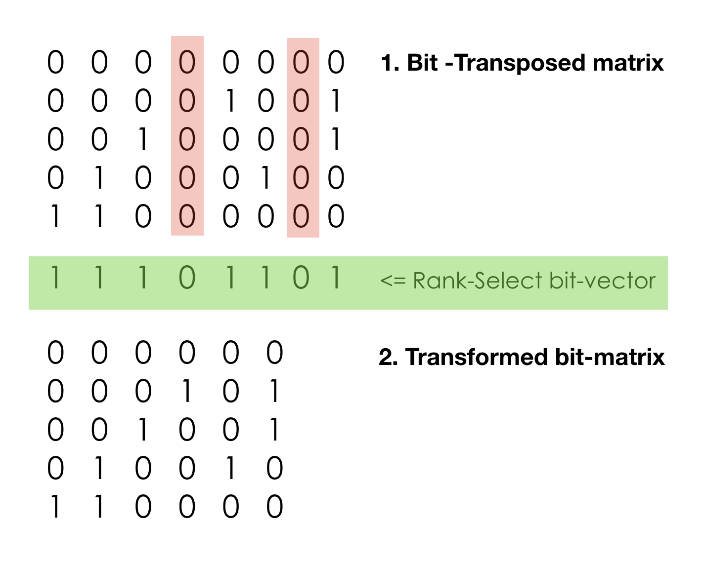
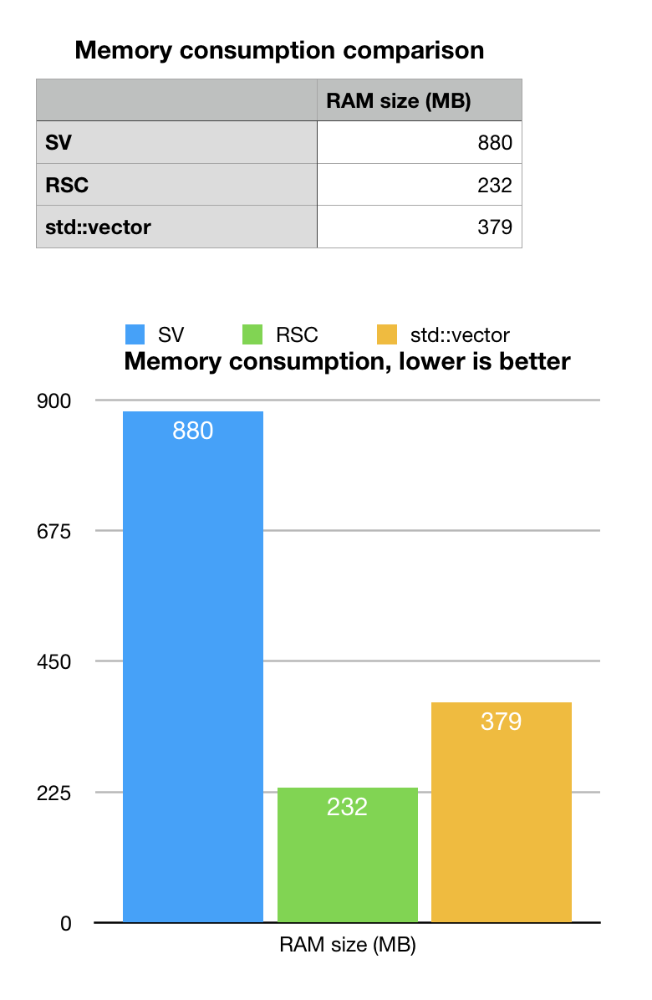
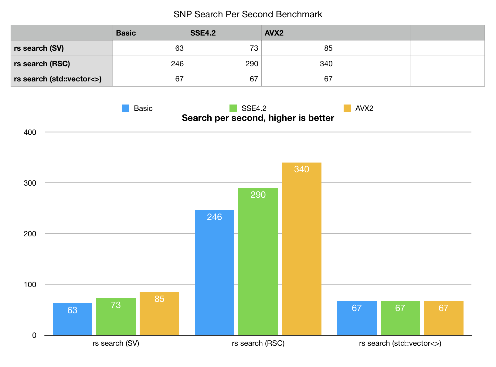

Search for a human SNP id with sparse vectors and succinct rank-select data structures
Anatoliy Kuznetsov. Mike Kholodov. Aug 2018. anatoliy_kuznetsov@yahoo.com
UPDATED: Oct, 2018 (new optimizations for Rank-Select operations).
Introduction
This tech. note compares memory consumption and search speed in bit-transposed data structures. As a use case example we take SNP report data from NCBI/NLM for human chromosome 1. The goal of this experiment is to run requests to retrieve SNP location (position) on a chromosome, but also be able to get SNP for position. The plan is NOT to build backward and forward index structures, but use bit-transposed matrix for compressed in-memory storage and do scanning search in it.
SNP report is an interesting case to experiment for information retrieval, it presents very inconvenient almost random data for SNP identifiers (rs numbers) dispersed rather randomly within the search space of human genome coordinates. If our program is capable of handling this case it will be even more capable dealing with more regular or limited bandwidth data.
While working on bio-informatics data this example presents a design pattern and a prototype for building memory compact structures for general purpose information retrieval, low latency visualization systems, collections of signals, time-series or events analysis, analysis of large sparse graphs, semantic WEB compression.
Experiment data
As a data set we took SNP report data published by NCBI.
ftp://ftp.ncbi.nlm.nih.gov/snp/organisms/human_9606/chr_rpts/Unpacked this data is approximately 6GB and about 53M rows.
If you look inside this file - this is a text tabular report of SNP rs numbers (SNP position on a chromosome), positions and other properties. For the sake of this experiment we are only interested in rs# and chromosome positions. For a production search system it would be necessary to index information in all columns
A few data properties which we take here for granted is that rs numbers are unique and rs positions are unique as well. One rs per position. In real life this rule may have rare exceptions, but for this experiment lets assume that our assumption stands.
 This is how SNPs are displayed by NCBI Grahical Sequence View. Not Exactly the same data, but it may be illustrative to take a look. Graphical View.
This report can be interpreted as position oriented where every row describes a position on a genome or rs-oriented, where each row describes an rs (as a primary key) and position is one of the attributes. Each variant of normalization has its own advantages, for this experiment we would like to build a position oriented vector. Another reading of "position oriented" would be "sorted by chromosome position".
Position oriented design has an advantage for applications trying to retrieve bunch of data using position coordinates. Human chromosome 1 has approximately 250M base pairs (positions). The simplest data structure for the task would be direct, straight forward array (std::vector<>) where each position is described with attributes. RS numbers are 32-bit integers, so if we pick simple (dense) vector data structure for position feature vector - we would see approximately 1GB memory footprint for this data set. This data structure would give us immediate access to every position with O(1) complexity.
1GB memory consumption is obviously too excessive, remember we are only talking about 50M objects. A possible variant here would be to store pairs of numbers position to rs number. This is not a bad variant we would be talking about only 400MB of memory, which looks operational, except we are talking about just one chromosome of one organism. Throw into the mix all possible SNPs on all chromosomes of all possible assemblies of all possible organisms and problem grows into Needle in Hay Stack i.e. BigData (™) class of problems. If we go into populations genomics, differences between individuals it becomes even more interesting.
Keep in mind remember we only took just two columns here: position and rs#.
ETL notes
Format parser and the whole extraction-transformation logic we provide wants a lot to be desired, but it is good enough as an tech.demonstrator. It extracts most of data, drops ambiguities (format is not perfectly clean), rate of dropped data seems to be tolerably low, so it allows us to experiment with a close to real-life model.
Overview of methods and data structures
In this example we try 3 methods:
- bit-transposed sparse vector bm::sparse_vector<>
- bit-transposed vector using rank-select based succinct representation bm::rsc_sparse_vector<>
- STL std::vector<> of pairs (simple, yet efficient impletation of sparse array)
Bit Transposed Sparse Vector - bm::sparse_vector<>
 BitMagic library provides container for bit-transposed integer data. Bit-transposed representation of the data uses binary properties where each bit is stored using its own bit vector, so internal layout is in fact a bit matrix (or a list of bit vectors). Bit-transposed representation offers lower memory footprint in exchange for more complicated access to container elements. Each element naturally needs to be re-assembled from distinct bit vector memory blocks.
Why this structure is compelling? First, sparse or dense bit-blocks are getting compressed (properties of BitMagic compressed bit vector implementation). Second, the excess bit-depth capacity may not be used at all. Lets assume that rs# effective bit-depth is 25-bits so all high order bit-plains (https://en.wikipedia.org/wiki/Bit_plane ) are getting dropped. (Just in case, my assumption on 25-bit depth of rs# is actually incorrect, in fact rs numbers happen to use 31 bits).
Rank Select sparse vector - bm::rsc_sparse_vector<>

Another structure to try is Rank-Select compressed sparse vector,
which is not “compressed” data structure in traditional sense, it rather implements a
succinct data structure. In computer science, a succinct data structure is a
data structure which uses an amount of space that is close to the information-theoretic
lower bound, but (unlike other more traditional compressed representations)
still allows for efficient query operations.
rsc_sparse_vector<> indeed allows random element access,
range decode operations and search using BitMagic sparse vector scanner.
The limitation of this structure is its limited update capabilities. Basically you have to rebuild it from a bm::sparse_vector<>.
The compaction is achieved via dropping unassigned (NULL) columns. It results in systematic savings in all bit planes. The RS index vector allows to virtually restore missing columns on the fly. The legitimate concern is that such manipulations can be quite slow. But the hope is that contemporary CPUs are very fast and have often under-utilized high-performance vector processing units (SIMD), so succinct data structures may be very practical.
Key points for rank-select transform
In this example we try 3 methods:
- We can drop columns with all zero values (in our model it is positions without SNPs on it). All we need is to keep “not-NULL” bit vector also known as Rank-Select vector. This “address bit-vector” alone allows to recompute the effective real address and understand that certain value is missing (or say ‘0’). Rank and Select operations on plain bit-vector boil down to POPCOUNT. It is computationally intensive and can be slow. Good implementations often rely on additional index structures for pre-computed running bit-counts for blocks, super-blocks, etc, trying to minimize the final POPCOUNT stage.
- Properties of Rank-Select operations allow us to find true address on not-NULL (meaningful) data and drop everything else.
- One bit-vector is a small price to pay, when we are talking about 30+ plains with sparse factor 1:5.
- This is not compression. Well, it sort of compression but not a classic dictionary encoding, fanno or arithmetic coding. We only perform certain data transformations (bitwise transposition and rank-select transformation). The data is still the same, we can restore it back and can access every single element. The computation penalty we pay.
- It is possible to create a fairly simple to use STL-like container for Rank-Select.
- It is possible to search in bit-transposed, rank-select data structures (more about that soon).
Rank-Select
 Please read a tech.note on rank implementation
in BitMagic. The current (3.14.0) rank-select implementation is not state of art,
but we know how to make it better.
Please read a tech.note on rank implementation
in BitMagic. The current (3.14.0) rank-select implementation is not state of art,
but we know how to make it better.
Memory. Is it all worth it?

As we remember, memory consumption estimate for our position ordered model was 1GB. Sparse vector (SV) memory consumption beats this estimate by 20%, but it is not a huge margin. It turned out that rs# are actually 31-bit long, very random and mutations are quite random as well (well, it matches the natural design of evolutionary mechanisms).
STL std::vector or pairs, is close to what we estimated as 400MB, minus whatever we lost when extracted data (parser is not production grade). The memory consumption should be close to a good hash-map or heap structure. Not bad at all. Many production systems using hash maps would be ok with this result.
Rank-Select succinct vector gives best memory footprint of 232MB (we used internal diagnostics of BitMagic). This looks quite good, we are looking at the larest chromosome in the human genome. At this compaction rate we can have the whole genome SNP placement map may fit in just 2-4GB of RAM.
Is this laypout operational? The sceptical intuition tells making search for a non-index property (reverse search) may be quite slow…
Lookup Search
The use case story here is that we want to perform a single SNP search to find out its position on a chromosome. Our data structure uses opposing orientation (position to rs#) and we need to reverse the search, to find position for a known rs#.
Why not build a reverse index?!
Perfectly valid question! Lets discuss our advantages and disadvantages. The main advantage of index is that it happens to be fast (by design). Reverse index, sorted by rs number (or hashed) will offer O(log N) or even close to O(1) performance. Disadvantage of reverse index is that you need to maintain it as part of your information retrieval infrastructure, construction of index takes some disk space and more importantly RAM space for in-memory search systems. Upon access index needs to be loade from disk and it means substantial costs (I/O bandwidth is slow).
If request pattern does is incidental you may choose not to build reverse lookup index and simply run a direct scan or some mask based scan using brute force lookup approach. This approach is especially compelling (and popular) with GP-GPU algorithms, where parallel compute capability can outgun the problem.
Long story short, for this case we try search without index using
bm::sparse_vector_scanner<>utility.
typedef bm::rsc_sparse_vector<unsigned, sparse_vector_u32> rsc_sparse_vector_u32;
…
bm::sparse_vector_scanner<rsc_sparse_vector_u32> scanner; // scanner class
for (unsigned i = 0; i < rs_vect.size(); ++i)
{
unsigned rs_id = rs_vect[i];
unsigned rs_pos;
bool found = scanner.find_eq(csv, rs_id, rs_pos);
if (found)
{
bv_found2.set_bit_no_check(rs_pos);
}
} // for

Our search experiment would run direct scan, single thread search on vector of 2000 rs# samples randomly extracted from the test set. Single core, single threaded benchmark.
- Rank-Select Sparse vector (RSC) scan outperforms all other variants with peak speed of 340 searches per second
- Bit-Transposed sparse vector (SV) is slower, but still looks competitive. It is close call for a standard non-SIMD build, but quickly gains speed with SIMD enabled, fastest on AVX2, thanks to bm::aggregator<> (BMs fast logical engine).
- STL std::vector<>, baseline algorithm based on direct scan of pairs is third… Sure, direct scan can also be SIMD vectorized, there is room for improvement there. Nonetheless the stock version looses big time even in non-vectorized form.
Why transposed data structures are faster?
Despite the initial intuitive reservations the bit-transposed data structures not just take less memory but also search faster. We were ready for trade-off, but there is no room for bargain.
- It is possible to formulate search as series of logical AND and AND NOT operations on bit-plane vectors. Bit-transposed matrix offers structures curiously similar to bloom filter without being a bloom filter per se and those self indexing properties can be exploited. We’ve got some index-like structure properties without building a “true” reverse lookup index.
bm::aggregator<>uses search space pruning techniques for logical operations, actively excluding areas, where it knows it cannot find results. This reduces memory transfer costs. Memory bandwidth optimization is very important. When using SV larger memory consumption actually does not translate into slower speed, because fast logical aggregation uses digests to prune the search space. bm::aggregator<> tech. note.- Succinct data structure based on rank-select offer minimal memory consumption and it means lots of savings on memory transfer. Memory bandwidth optimization is often the key.
- Rank-Select operations in BitMagic library implemented using accelerated prefix sum data structures, making address transformations quite fast (still need to improve it even more).
Can it be even Faster?
Humans are always fascinated with performance, race cars and SIMD software optimizations.
Yes, it can be faster!
One area of improvement here is to construct real fast Rank-Select index. There is a plan for multi-level superblock-block index structure, cache aware, use vectorized algorithms. Current BitMagic 3.14.0 Rank-Select implementation is not state of art, we can do it better.
Another area of improvement is to implement group, cooperative, cache coherent search, when close matching search elements (rs#) are scanned together and then Select address translation is also done together. This optimization is often called cache blocking and it can potentially result in dramatic speed improvement, especially for AVX2.
Multi-core parallel execution. The problem can be split into independent sub-searches and run in parallel. Bit-transposed matrixes are inherently parallel structures should scale well with threads.
GP-GPU? Being both massively parallel and memory compact data representation is an excellent pre-cursor for GPU acceleration. Massively parallel architecture, plus fast memory should be a great performer. Anybody with CUDA and new nVidia RTX 20 series game to try?
Source code
The source code and reproduction instructions are available on GitHub. It builds as part of BitMagic sample build (you can do it with g++ (make/cnmake), MSVC (Windows) or XCODE (MacOS)).
Update of Oct, 2018
BitMagic library v.3.14.5 implements optimizations for better Rank-Select index. Tech. note:Rank-Select operations. New benchmark results for AVX2 show 390 search operations per second (was 340). 15% improvement over just one aspect of succinct search (SELECT optimizations).